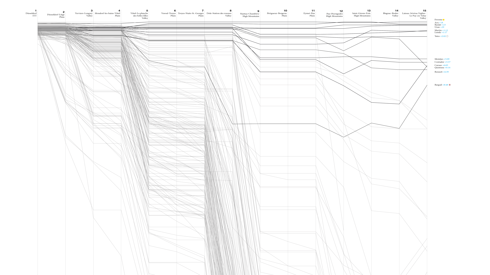
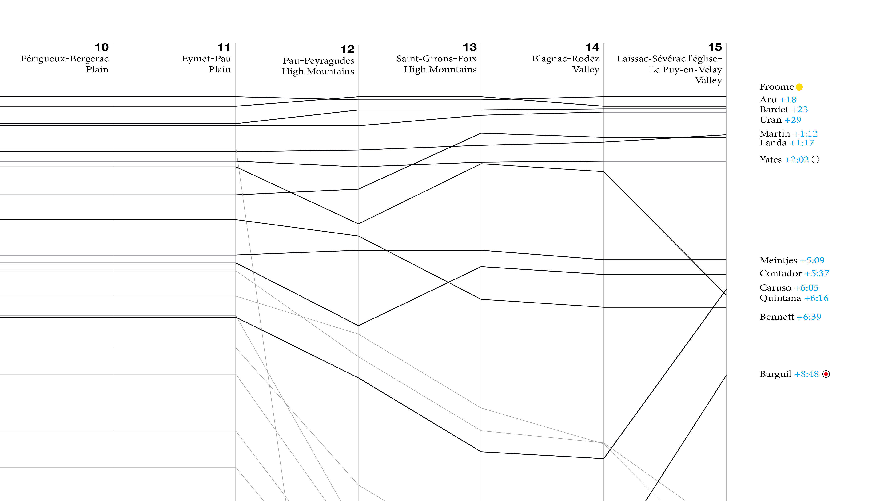

Visualizing the Tour de France General Classification Build-Up
July 16, 2017
The 104th edition of the Tour de France is in full swing. Time to have a look at how the General Classification developed so far.
Wait, what? General Who? Tour de WTF?
OK, sorry. If you have no interest in the sport of riding bicycles and never heard of the most popular bike race in the world, maybe start with a Wikipedia article.
To the rest who knows at least that there is such a thing as the Tour de France, let’s revisit how that race works. The Tour (as friends call it) is a stage race. The nearly 200 riders, belonging to teams of nine riders each, ride twenty-one stages overall, over the course of twenty-three days.
Each stage can be seen as a race in its own right. Some are normal races, where all riders start together and the fastest rider wins the stage. Then there are time trials, which work a bit different. In an individual time trial (ITT), each rider rides by himself, one after another. In a team time trial (TTT), things get a bit more complicated, but in general – as the name says – the whole team rides together.
Regardless if the stage is a time trial stage or not, the time each rider takes from start to finish of a stage is noted and added up in the “General Classification” (GC) after each stage. The leader of the GC gets to wear the famous Yellow Jersey for the next stage. Whoever finished all stages and spent the least time overall, is the overall winner.
There are additional classifications, like the mountains or the sprint classification, which make the story even more complex. But we won’t get into this now.
So, as the above explanation shows, winning the Tour de France takes a long time. Some 3.500 kilometers want to be ridden, and whoever wants to win the GC, has to be consistent, should conserve himself well, and of course needs a strong team around him. It’s pretty much an elimination race, where it’s often more about avoiding mistakes, staying upright, than about actively attacking and distancing the opponents.
As a visual person, I need some visual representation of the GC development. Here is one approach, showing the buid-up (or alternatively: the fall-out) over the first 15 stages.

If that means anything to you, you are looking at a parallel coordinates chart. The X direction shows the development of the GC from stage to stage. The Y dimension represents the overall duration the riders took, relatively to each other. The GC leader is always shown in the very top with a time offset of zero. The other riders are placed further below, depending on how big their gap is compared to the leader. Each line links these data points from stage to stage for one rider.
The lines representing a few top riders are thicker and darker than the rest. These are, by no special criterium, those who can still maintain some hopes for the overall win. The other ~180 lines are lighter, to allow us to recognize some patterns over the course of the race.
At the left side of the graph, after stage one – an individual time trial (ITT) – most riders are still relatively close together. No surprise, since the stage was only 14 kilometers long.
Then, for each stage, the visualization shows a bundle of horizontal lines. These are the riders who didn’t lose time, but also didn’t win. Then some others drop down with various slopes. These are riders who lose various amounts of time, compared to the leader. And then, as visible for the first time in stage five, some rider’s lines tend upwards. These are riders who could win time, i. e. the reduced their time gap to the leader.
When you look at the graph above, you should see clearly: Some stages are more meaningful for the GC than others. They spread the lines out, which means they produce bigger overall time gaps. These tend to be the stages that involve riding uphill or “climbing”, as the cycling jargon calls it. However it’s still done on a bike, usually. Seeing that, you might get why Tour de France winners tend to be good climbers, which also means they are usually on the lower end of the BMI spectrum.

Road cycling nowadays is a team effort. Each team with ambitions to win the GC (and thus the Tour) usually has one rider that is supposed to become the leader. The other riders in the team have the job to help their leader save as much energy as possible. They take turns to keep their leader out of the wind and carry bottles from the team car to the riders, for example. Being up high in the GC is not important for them. And since most riders have no GC ambitions, it’s also not surprising to see many lines bend down more and more at some point.
The real GC race of the 2017 Tour has started to become really interesting over the last few stages. While the hilly 5th stage and the very hilly 9th, this year’s so-called “queen stage”, spread out the main contenders and increased their time gaps, some of them now managed to win time again on the current leader, Chris(topher) Froome. Among them are Romain Bardet, Rigoberto Uran, and Daniel Martin. This makes the race more open as we go into the third and last week of the Tour. On the other hand, one of the pre-race favourites, Nairo Quintana, has pretty much lost touch after losing roughly four minutes at today’s stage.
I’ll probably add a few more graphs here and on Twitter as the GC emerges.
If you’d like to create your own visualizations for the GC or the other classifications of the Tour de France, you can use a tool I wrote to gather the classification data called tour-tracker. The source is on Github. The visualization itself is half generated SVG, half manually created stuff which is combined in Illustrator. It could be created complelety programmatically, but I haven’t got around to do it yet.
If you have visualizations to share, any questions or comments, please use the comments function below. It might require unblocking Disqus (if you are the Ghostery type of guy, like me).
Update 2017-07-23: After the last stage